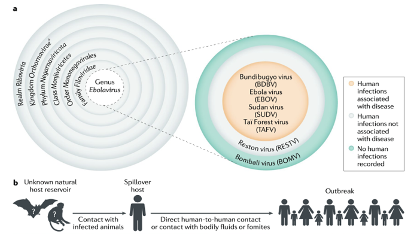
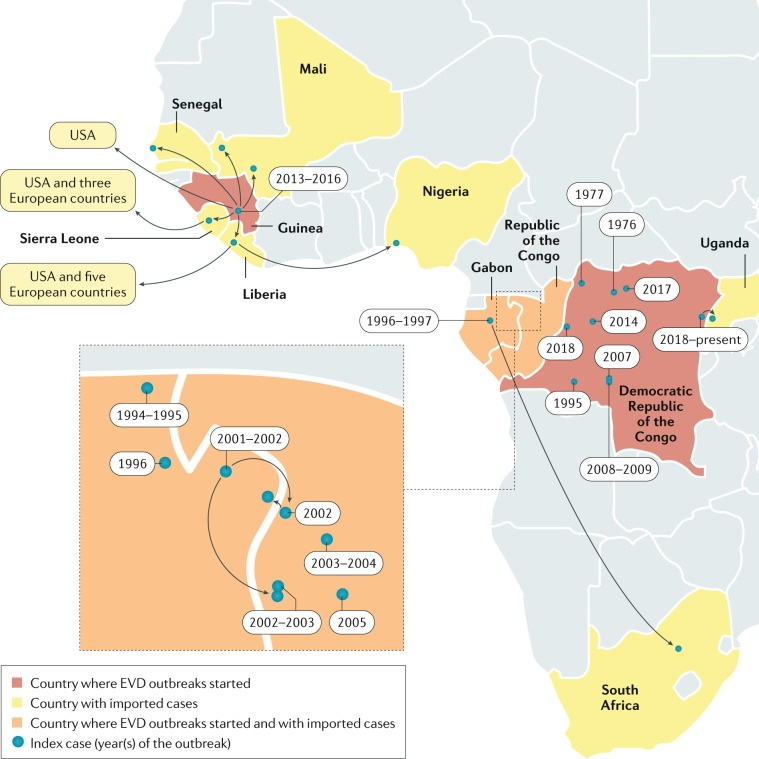
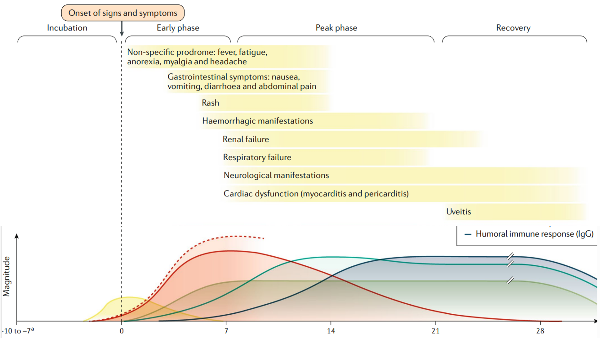
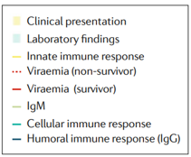
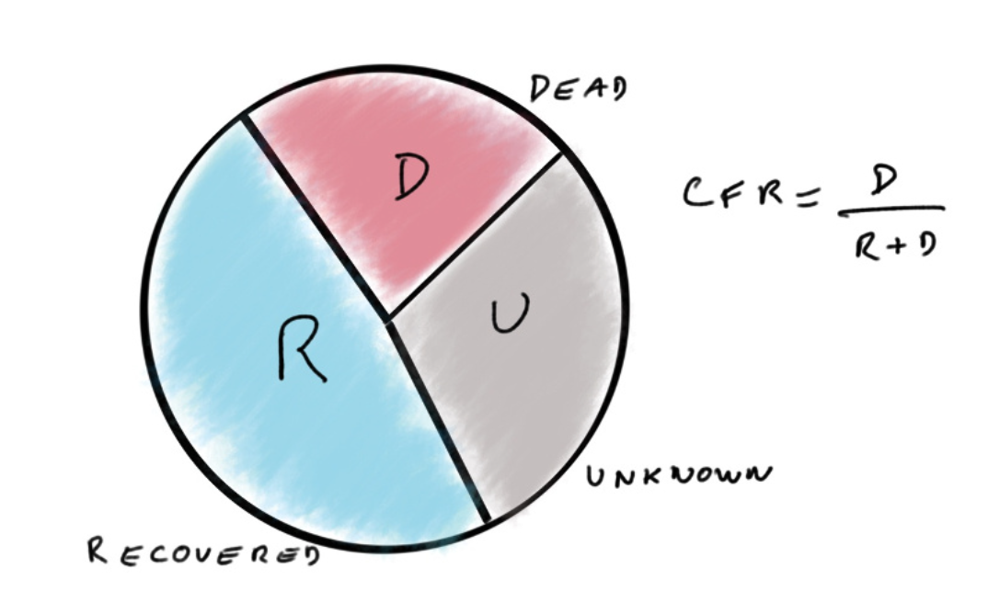
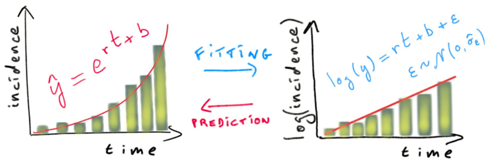
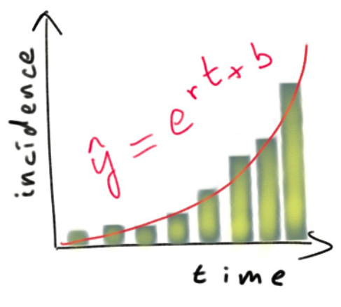
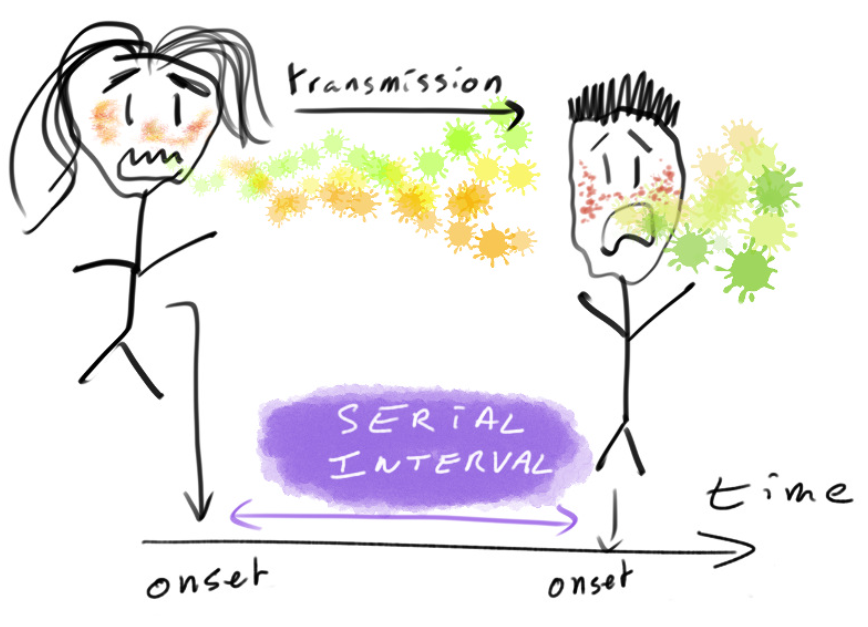
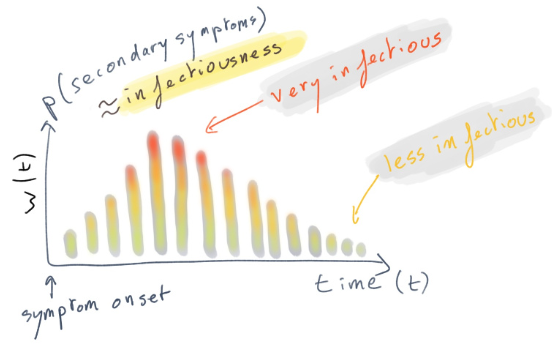

05:00
Estadísticas y métodos para el análisis de la respuesta a brotes.
Día 2
Agenda:
Introducción (10min)
Taller (100min)
Discusión (30min)
Contexto:
La enfermedad por el virus del ébola (EVE) apareció en 1976 en brotes casi simultáneos en la República Democrática del Congo (RDC) y Sudán del Sur
Entre 1979 y 1994 no se detectaron casos ni brotes
Desde 1994 se han reconocido brotes con una frecuencia cada vez mayor
El mayor brote hasta la fecha tuvo lugar en África Occidental entre marzo de 2014 y junio de 2016
Taxonomía y transmisión del virus del Ébola
doi: 10.1038/s41572-020-0147-3.
Brotes del virus del ébola
doi: 10.1038/s41572-020-0147-3.
Curso clínico


Alta letalidad:
De 5986 casos a nivel mundial fuera del brote de África Occidental han muerto 3963 (CFR 66%)
Instrucciones del taller
Introducción
- Esta práctica simula la evaluación temprana y la reconstrucción de un brote de enfermedad por el virus del Ébola (EVE).
Conceptos básicos a desarrollar:
Razon de letalidad por caso (CFR - Case Fatality Ratio)
Curvas epidemiológicas (e.g. Incidencia de casos - \(I_t\))
Rastreo de contactos
Tiempo de duplicación y tasa de crecimiento
Intervalo Serial (SI - Serial Inverval)
Número reproductivo instantáneo (\(R_t\))
Objetivos
Estimar la razon de letalidad por caso (CFR)
Calcular, visualizar la incidencia de casos (\(I_t\))
Identificar parámetros descriptivos de la transmisión de una enfermedad infecciosa (humano-humano).
Estimar e interpretar la tasa de crecimiento y el tiempo de duplicación de la epidemia.
Estimar e interpretar el número de reproducción instantáneo de la epidemia (\(R_t\))
Situación a analizar
Hay un nuevo brote de EVE en un país ficticio de África occidental
- Se ha notificado un nuevo brote de EVE en un país ficticio de África occidental.
- El Ministerio de Salud se encarga de coordinar la respuesta al brote, y lo ha contratado a usted como consultor en análisis epidémico para informar la respuesta en tiempo real.
Al inicio del brote
Análisis rápido de la situación para orientar la toma de decisiones
¿Qué preguntas surgen inmediatamente?
Al inicio del brote
Se requieren datos para planear la respuesta a:
¿Qué tan rápido crece una epidemia?
¿Cuál es el riesgo de muerte?
¿Cuántos casos puedo esperar en los próximos días?
¿Cuánta capacidad hospitalaria y del sistema de salud requeriremos en los próximos días?
¿Qué datos necesito?
Datos disponibles usuales en epidemias nuevas
Fecha de inicio de síntomas: date of onset
Fecha de exposición/infección: infection date
Fecha del desenlace (recuperación, muerte): outcome date
Datos generales del individuo: edad, género, ocupación, etc
Datos de brotes anteriores
Metodología del taller
La práctica está divida en 6 secciones. En cada una de ellas vamos a tener:
- Explicaciones de los conceptos a trabajar
- Espacio de lectura y ejecución del código
- Espacios de reflexión y discusión
Pasemos a R 👩💻👨💻
Instrucciones:
Desarrolle la sección 1. Preparación
Cargue las librerías necesarias:
library(tidyverse) # contiene ggplot2, dplyr, tidyr, readr, purrr, tibble
library(readxl) # para leer archivos Excel
library(binom) # para intervalos de confianza binomiales
library(knitr) # para crear tablas bonitas con kable()
library(incidence) # para calcular incidencia y ajustar modelos
library(EpiEstim) # para estimar R(t)Cargue las bases de datos:
Estructura de los datos:
Rows: 60
Columns: 3
$ infectante <chr> "d1fafd", "f5c3d8", "0f58c4", "f5c3d8", "20b688", "2ae019",…
$ id_caso <chr> "53371b", "0f58c4", "881bd4", "d58402", "d8a13d", "a3c8b8",…
$ fuente <chr> "otro", "otro", "otro", "otro", "funeral", "otro", "funeral…Rows: 166
Columns: 11
$ id_caso <chr> "d1fafd", "53371b", "f5c3d8", "6c286a", "0f58…
$ generacion <dbl> 0, 1, 1, 2, 2, 0, 3, 3, 2, 3, 4, 3, 4, 2, 4, …
$ fecha_de_infeccion <date> NA, 2014-04-09, 2014-04-18, NA, 2014-04-22, …
$ fecha_inicio_sintomas <date> 2014-04-07, 2014-04-15, 2014-04-21, 2014-04-…
$ fecha_de_hospitalizacion <date> 2014-04-17, 2014-04-20, 2014-04-25, 2014-04-…
$ fecha_desenlace <date> 2014-04-19, NA, 2014-04-30, 2014-05-07, 2014…
$ desenlace <chr> NA, NA, "Recuperacion", "Muerte", "Recuperaci…
$ genero <fct> f, m, f, f, f, f, f, f, m, m, f, f, f, f, f, …
$ hospital <fct> Military Hospital, Connaught Hospital, other,…
$ longitud <dbl> -13.21799, -13.21491, -13.22804, -13.23112, -…
$ latitud <dbl> 8.473514, 8.464927, 8.483356, 8.464776, 8.452…¿Son los datos y el formato similares a bases de datos de casos que ha visto en el pasado?
¿Qué otra información le gustaría recopilar?
Probabilidad de muerte en los casos reportados (CFR)
CFR: Case Fatality Ratio
https://www.reconlearn.org/post/outbreakstatsprimer.html
No confundir CFR con IFR
CFR: Es la probabilidad de muerte a causa de la infección para los casos reportados:
\(\rightarrow\) El CFR se puede calcular con los datos de vigilancia epidemiológica
\[ \text{CFR} = \frac{\text{# de muertes confirmadas}}{\text{# casos con desenlace conocido}} \]
IFR: Es la probabilidad de muerte a causa de la infección teniendo en cuenta infecciones detectadas y no detectadas
\(\rightarrow\) IFR sólo se puede calcular con datos de vigilancia epidemiológica + información adicional como estudios prevalencia
Instrucciones
Lea y desarrolle la sección 2. CFR
05:00
Tasa de fatalidad de casos (CFR)
Tasa de fatalidad de casos (CFR)
¿Cómo calcularía el CFR a partir de esto?
Piense en qué hacer con los casos cuyo resultado es `NA`
Cálculo de CFR
| method | x | n | mean | lower | upper |
|---|---|---|---|---|---|
| exact | 60 | 103 | 0.5825243 | 0.4812264 | 0.6789504 |
¿Cómo interpreta estos resultados?
Incidencia
Número de casos nuevos en un período de tiempo determinado
Se basa en las fechas, por lo general, de inicio de síntomas.
Se afecta por los rezagos de reporte (e.g. quienes iniciaron síntomas ayer sólo van a ser reportados algunos días después)

https://www.repidemicsconsortium.org/incidence/
Incidencia
El primer paso del análisis es descriptivo: queremos dibujar una epicurva o curva epidemiológica. Esto permite visualizar la incidencia a lo largo del tiempo por fecha de inicio de los síntomas.
La primera pregunta que queremos responder es: ¿qué tan grave es la situación?
Para ello, ¡miraremos las curvas de incidencia!
Curva epidémica con modelo log lineal
https://www.reconlearn.org/post/outbreakstatsprimer.html
\[ \left. \begin{matrix} y:\text{número de casos incidentes} \\ r:\text{tasa de crecimiento} \\ \beta_0: \text{intercepto} \end{matrix} \right\} \log(y) = \beta_0 + rt + \epsilon \Rightarrow \hat{y} = \exp^{rt+\beta_0} \]
¡La tasa de crecimiento es la pendiente de la recta en escala logarítmica!
Tiempo de duplicación
\[ \left. \begin{matrix} y:\text{número de casos incidentes} \\ r:\text{tasa de crecimiento} \\ \beta_0: \text{intercepto} \end{matrix} \right\} \hat{y} = \exp^{rt + \beta_0} \]
\(T\) es el tiempo que le toma a la curva epidémica para duplicarse:
\[ \hat{y}_2 = 2\hat{y}_1 \\ 2 = \frac{\hat{y}_2}{\hat{y}_1} = \frac{\exp^{rt_2 + \beta_0}}{\exp^{rt_1 + \beta_0}} \\ 2 = \exp^{r(t_2-t_1)} = \exp^{rT}\\ \Rightarrow T = \frac{\log(2)}{r} \]
Instrucciones
Lea y desarrolle las secciones:
3. Incidencia
4. Tasa de crecimiento
15:00
Incidencia diaria según fecha de inicio de síntomas
<incidence object>
[166 cases from days 2014-04-07 to 2014-06-29]
$counts: matrix with 84 rows and 1 columns
$n: 166 cases in total
$dates: 84 dates marking the left-side of bins
$interval: 1 day
$timespan: 84 days
$cumulative: FALSEIncidencia de casos semanal
Otro problema es que puede ser difícil interpretar las tendencias al observar la incidencia diaria
Calcule la incidencia semanal:
incidencia_semanal <- incidence(directorio_casos$fecha_inicio_sintomas,
interval = 7,
last_date = max(directorio_casos$fecha_de_hospitalizacion,
na.rm = TRUE))
incidencia_semanal<incidence object>
[166 cases from days 2014-04-07 to 2014-06-30]
[166 cases from ISO weeks 2014-W15 to 2014-W27]
$counts: matrix with 13 rows and 1 columns
$n: 166 cases in total
$dates: 13 dates marking the left-side of bins
$interval: 7 days
$timespan: 85 days
$cumulative: FALSEIncidencia de casos semanal
- Grafique la incidencia semanal:

Estimación de la tasa de crecimiento mediante un modelo log-lineal
El modelo log-lineal es uno de los modelos de incidencia más simple
Es un modelo de regresión lineal implementado sobre incidencias transformadas logarítmicamente
Trabajaremos con incidencia semanal, para evitar tener problemas con valores de incidencia cero.
Curva epidémica con modelo log lineal
- Grafique la incidencia transformada logarítmicamente
- ¿Qué le dice esta gráfica sobre la epidemia?


Curva epidémica con modelo log lineal
Ajuste un modelo log-lineal a los datos de incidencia
<incidence_fit object>
$model: regression of log-incidence over time
$info: list containing the following items:
$r (daily growth rate):
[1] 0.04145251
$r.conf (confidence interval):
2.5 % 97.5 %
[1,] 0.02582225 0.05708276
$doubling (doubling time in days):
[1] 16.72148
$doubling.conf (confidence interval):
2.5 % 97.5 %
[1,] 12.14285 26.84302
$pred: data.frame of incidence predictions (12 rows, 5 columns)Curva epidémica con modelo log lineal

Curva epidémica con modelo log lineal
¿Cuántas semanas debe descartar al final de la epicurva?
Trunque la incidencia semanal según las semanas descartadas
semanas_a_descartar <- 2 fecha_minima <- min(incidencia_diaria$dates) fecha_maxima <- max(incidencia_diaria$dates) - semanas_a_descartar * 7 # Para truncar la incidencia semanal incidencia_semanal_truncada <- subset(incidencia_semanal, from = fecha_minima, to = fecha_maxima) # descarte las últimas semanas de datos # Incidencia diaria truncada. No la usamos para la regresión lineal pero se puede usar más adelante incidencia_diaria_truncada <- subset(incidencia_diaria, from = fecha_minima, to = fecha_maxima) # eliminamos las últimas dos semanas de datos
Curva epidémica con modelo log lineal
Vuelva a ajustar y a graficar el modelo logarítmico lineal, pero utilizando los datos truncados.
<incidence_fit object>
$model: regression of log-incidence over time
$info: list containing the following items:
$r (daily growth rate):
[1] 0.05224047
$r.conf (confidence interval):
2.5 % 97.5 %
[1,] 0.03323024 0.0712507
$doubling (doubling time in days):
[1] 13.2684
$doubling.conf (confidence interval):
2.5 % 97.5 %
[1,] 9.728286 20.85893
$pred: data.frame of incidence predictions (10 rows, 5 columns)
Curva epidémica con modelo log lineal
Observe las estadísticas resumidas de su ajuste:
Call:
stats::lm(formula = log(counts) ~ dates.x, data = df)
Residuals:
Min 1Q Median 3Q Max
-0.73474 -0.31655 -0.03211 0.41798 0.65311
Coefficients:
Estimate Std. Error t value Pr(>|t|)
(Intercept) 0.186219 0.332752 0.560 0.591049
dates.x 0.052240 0.008244 6.337 0.000224 ***
---
Signif. codes: 0 '***' 0.001 '**' 0.01 '*' 0.05 '.' 0.1 ' ' 1
Residual standard error: 0.5241 on 8 degrees of freedom
Multiple R-squared: 0.8339, Adjusted R-squared: 0.8131
F-statistic: 40.16 on 1 and 8 DF, p-value: 0.0002237¿El modelo se ajusta bien a los datos?
Curva epidémica con modelo log lineal
Estimacion de la tasa de crecimiento
¿Cuál es la tasa de crecimiento estimada de la epidemia?, ¿Cómo lo interpreta?
# Estimación de la tasa de crecimiento diaria
tasa_crecimiento_diaria <- ajuste_modelo_semanal$info$r
cat("La tasa de crecimiento diaria es:", tasa_crecimiento_diaria, "\n")La tasa de crecimiento diaria es: 0.05224047 # Intervalo de confianza de la tasa de crecimiento diaria
tasa_crecimiento_IC <- ajuste_modelo_semanal$info$r.conf
cat("Intervalo de confianza de la tasa de crecimiento diaria (95%):", tasa_crecimiento_IC, "\n")Intervalo de confianza de la tasa de crecimiento diaria (95%): 0.03323024 0.0712507 Tiempo de duplicación
¿Cuál es el tiempo de duplicación estimado de la epidemia?,
¿Cómo lo interpreta?
Tiempo de duplicación
¿Cuál es el tiempo de duplicación estimado de la epidemia?,
¿Cómo lo interpreta?
# Estimación del tiempo de duplicación en días
tiempo_duplicacion_dias <- ajuste_modelo_semanal$info$doubling
cat("El tiempo de duplicación de la epidemia en días es:", tiempo_duplicacion_dias, "\n")El tiempo de duplicación de la epidemia en días es: 13.2684 # Intervalo de confianza del tiempo de duplicación
tiempo_duplicacion_IC <- ajuste_modelo_semanal$info$doubling.conf
cat("Intervalo de confianza del tiempo de duplicación (95%):", tiempo_duplicacion_IC, "\n")Intervalo de confianza del tiempo de duplicación (95%): 9.728286 20.85893 Intervalo serial:
El intervalo serial es el tiempo entre la fecha de inicio de síntomas entre casos primarios y secundarios


https://www.reconlearn.org/slides/outbreak-statistics/outbreak-statistics#16
Modelo de proceso de ramificación
¿Qué es el número de reproducción \(R\) y para qué sirve?
En las primeras etapas de un brote, y asumiendo una gran población sin inmunidad, esta cantidad corresponde al número de reproducción básico \(R(0)\).
Cuando la suposición de que \(R\) es constante no es sostenible, una alternativa es estimar la transmisibilidad variable en el tiempo utilizando el número de reproducción instantánea \(R_t\).
Modelo de proceso de ramificación
[AÑADIR IMAGEN]
Modelo de Poisson para la incidencia
- La fuerza de infección se puede calcular como
\[ \lambda_t \approx R_t \sum_{s=1}^{t-1} I_{s} w_{t-s} \]
En donde \(R_t\) representa el número de reproducción efectiyo y \(w\) la distribución del intervalo serial discreta.
Modelo de Poisson para la incidencia
El paquete de R
{EpiEstim}estima \(R_t\) para ventanas de tiempo personalizadas utilizando la distribución de probabilidad de Poisson [Cori et al. 2013]Descripción de la incidencia por medio de la ecuación de renovación:
\[ I_t \sim Poisson\left(\lambda_{t}\right | R_{t}, I_1, ..., I_{t-1}) = Poisson\left(R_{t} \sum_{s=1}^{t-1} I_{s} w_{t-s} \right) \]
Instrucciones
Lea y desarrolle las sección 6. Rt
10:00
Estimación del número reproductivo instantáneo \(R_t\)
A continuación, estimamos la transmisibilidad para ventanas de tiempo deslizantes de 1 semana (el valor predeterminado de estimate_R):
# Parametros de la distribución gamma para el invertavlo serial
mean_si <- 8.7
std_si <- 6.1
configuracion_rt <- make_config(mean_si = mean_si, # Media de la distribución SI
std_si = std_si, # Desviación estándar de la distribución SI
t_start = 2, # Día de inicio de la ventana de tiempo
t_end = length(incidencia_diaria_truncada$counts)) # Último día de la ventana de tiempoEstimacion del número reproductivo instantáneo (Rt)
# use estimate_R using method = "parametric_si"
estimacion_rt <- estimate_R(incidencia_diaria_truncada, method = "parametric_si",
si_data = si_data,
config = configuracion_rt)
# Observamos las estimaciones más recientes de R(t)
tail(estimacion_rt$R[, c("t_start", "t_end", "Median(R)",
"Quantile.0.025(R)", "Quantile.0.975(R)")]) t_start t_end Median(R) Quantile.0.025(R) Quantile.0.975(R)
1 2 70 1.262905 1.0483 1.504981Estimacion del número reproductivo instantáneo (Rt)